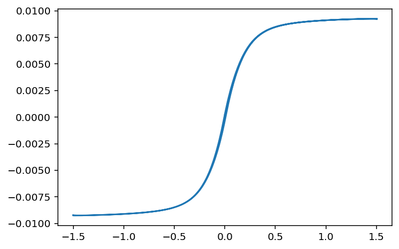
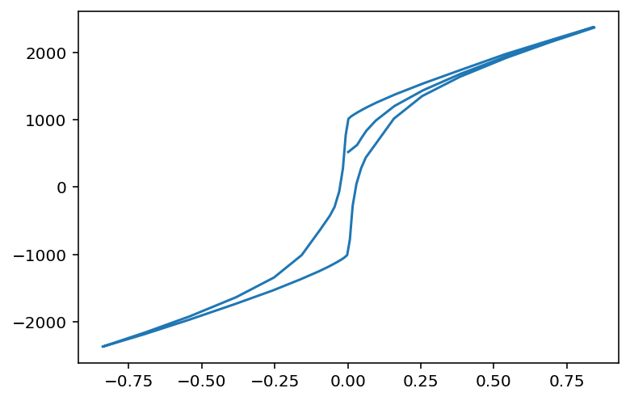
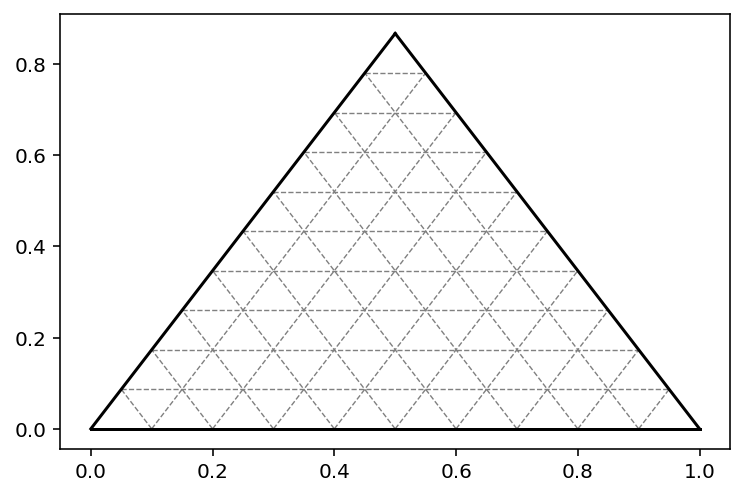

Introduction to RockPy¶
Table of Contents
%load_ext autoreload
%autoreload 2
import os
import RockPy as rp
import pandas as pd
from scipy import stats
%config InlineBackend.figure_format = 'retina'
%pylab inline
23:37:44 DEBUG:RockPy.read_abbreviations >> READING FTYPE/MTYPE abbreviations.txt
Populating the interactive namespace from numpy and matplotlib
rp.debug_mode()
Philosopy¶
Naming converntions¶
modules/packages: lower case with
_to separate wordsClassses: camelcase (e.g. TestMesurement)
functions: lower case with
_to separate words
this leads to consistency in importing and easily distinguishable class and folder names.
from RockPy.Packages.Magnetism.measurements import Hysteresis
from RockPy.tools.panda_tools import cool, heat
Terminology¶
Study: The Study object that contains all the samples and measurement.Sample: The Sample object wich contains the sample specific measurements.Measurement: Contains all the data of that measurement. The data can be accessed throughMeasurement.dataand is apandas.DataFrameobject.mtype: measurement type (e.g.hysteresis,dcd…)ftype: file type (e.g.vsm,mpms…)fpath: file path, the full path to the measurement data fileresult: The results that can be calculated from a measurement. These are in itself objects and can be called byMeasurement.result().recipe: A result may have different recipes for calculating the result. IfMeasurement.result(recipe = 'default')is called, the default method will be used, but in some cases more than one method may be available. You can check withMeasurement.result.implemented_recipes
S = rp.Study('Test_Study')
s = S.add_sample('Test_Sample')
23:37:48 DEBUG:RockPy.Study.__init__ >> Creating Study[140295783247120] << Test_Study >>
23:37:48 DEBUG:RockPy.Sample.__init__ >> Creating Sample[140295783247056] Test_Sample:1
The Sample object¶
A Sample represents a physical sample. All measurements taht have been done on that specific sample can be added to it. This includes mass, height, diameter but these can be added during the creation of the Sample object.
creating a Sample¶
The first example does not contain any parameter (RockPy.Parameter) measurements.
s = S.add_sample('sample_1')
23:37:55 DEBUG:RockPy.Sample.__init__ >> Creating Sample[140295783185040] sample_1:2
The Parameters can be added later or added directly with the Sample object. Just specify the mass, diameter, or height when you create the Sample object.
If no mass_unit (or unit in the more general case) is given, we assume you mean kg.
If no length_unit (or unit in the more general case) is given, we assume you mean m.
s = S.add_sample('sample_2', mass=1)
23:37:58 DEBUG:RockPy.Sample.__init__ >> Creating Sample[140295783364176] sample_2:3
23:37:58 DEBUG:RockPy.mass.__init__ >> Creating measurement: id:140295783363088 idx:0
23:37:58 INFO:RockPy.Sample._add_mobj >> ADDING << generic, mass >>
23:37:58 DEBUG:RockPy.mass.append_to_clsdata >> appending data to << mass >> cls data
23:37:58 DEBUG:RockPy.Sample.add_parameter_measurements >> Creating parameter << mass >> measurement
23:37:58 DEBUG:RockPy.Sample.add_measurement >> creating minfo from mtype: << mass >>
s = S.add_sample('sample_3', mass=1, mass_unit='mg', height=5.3, length_unit='mm', diameter=12)
23:38:02 DEBUG:RockPy.Sample.__init__ >> Creating Sample[140295512805008] sample_3:4
23:38:02 DEBUG:RockPy.convert >> converting 1.000e+00 [1 milligram] -> 1.000e-06 [1 kilogram]
23:38:02 DEBUG:RockPy.mass.__init__ >> Creating measurement: id:140295512805328 idx:1
23:38:02 INFO:RockPy.Sample._add_mobj >> ADDING << generic, mass >>
23:38:02 DEBUG:RockPy.mass.append_to_clsdata >> appending data to << mass >> cls data
23:38:02 DEBUG:RockPy.Sample.add_parameter_measurements >> Creating parameter << mass >> measurement
23:38:02 DEBUG:RockPy.Sample.add_measurement >> creating minfo from mtype: << mass >>
23:38:02 DEBUG:RockPy.convert >> converting 1.200e+01 [1 millimeter] -> 1.200e-02 [1 meter]
23:38:02 DEBUG:RockPy.diameter.__init__ >> Creating measurement: id:140296352531792 idx:0
23:38:02 INFO:RockPy.Sample._add_mobj >> ADDING << generic, diameter >>
23:38:02 DEBUG:RockPy.diameter.append_to_clsdata >> appending data to << diameter >> cls data
23:38:02 DEBUG:RockPy.Sample.add_parameter_measurements >> Creating parameter << diameter >> measurement
23:38:02 DEBUG:RockPy.Sample.add_measurement >> creating minfo from mtype: << diameter >>
23:38:02 DEBUG:RockPy.height.__init__ >> Creating measurement: id:140296854454608 idx:0
23:38:02 INFO:RockPy.Sample._add_mobj >> ADDING << generic, height >>
23:38:02 DEBUG:RockPy.height.append_to_clsdata >> appending data to << height >> cls data
23:38:02 DEBUG:RockPy.Sample.add_parameter_measurements >> Creating parameter << height >> measurement
23:38:02 DEBUG:RockPy.Sample.add_measurement >> creating minfo from mtype: << height >>
s.measurements
array([<<RockPy.sample_3.mass 1e-06 (kilogram) at 0x7f9918344fd0>>,
<<RockPy.sample_3.diameter 0.012 (meter) at 0x7f994a418550>>,
<<RockPy.sample_3.height 5.3 (meter) at 0x7f99682c4150>>],
dtype=object)
Adding a measurement to a sample¶
There are a number of measurement types (mtype) implemented in RockPy. You can easily check which ones are by calling RockPy.implemented_measurements. RockPy.implemented_measurements is a python dictionary with the measurement names as key and the corresponding class as values.
rp.implemented_measurements
{'demagnetization': RockPy.packages.magnetism.measurements.Demagnetization,
'parameter': RockPy.packages.generic.parameter.Parameter,
'dcd': RockPy.packages.magnetism.measurements.Dcd,
'height': RockPy.packages.generic.parameter.Height,
'paleointensity': RockPy.packages.magnetism.measurements.Paleointensity,
'hysteresis': RockPy.packages.magnetism.measurements.Hysteresis,
'diameter': RockPy.packages.generic.parameter.Diameter,
'irm_acquisition': RockPy.packages.magnetism.measurements.Irm_Acquisition,
'length': RockPy.packages.generic.parameter.Length,
'acquisition': RockPy.packages.magnetism.measurements.Acquisition,
'mass': RockPy.packages.generic.parameter.Mass}
adding a Parameter measurement (i.e. mass)¶
Parameter measurements, like all other measurements can be created by creating an object from the class in RockPy.implemented_measurements. They have the special property, however, that they can also be simultaneously created when the RockPy.sample object is created as we have seen earlier.
A mass can also be added just like every other measurement by using RockPy.Sample.add_measurement(). In this example, the mass is added using mtype='mass' and a value for the mass in kg.
s.add_measurement(mtype='mass', value=2)
23:38:23 DEBUG:RockPy.mass.__init__ >> Creating measurement: id:140295783365520 idx:2
23:38:23 INFO:RockPy.Sample._add_mobj >> ADDING << generic, mass >>
23:38:23 DEBUG:RockPy.mass.append_to_clsdata >> appending data to << mass >> cls data
<<RockPy.sample_3.mass 2.0 (kilogram) at 0x7f992854bb90>>
But you can also specify the mass_unit directly.
s.add_measurement(mtype='mass', value=2.1, mass_unit='mg')
23:38:32 DEBUG:RockPy.mass.__init__ >> Creating measurement: id:140295783433936 idx:3
23:38:32 INFO:RockPy.Sample._add_mobj >> ADDING << generic, mass >>
23:38:32 DEBUG:RockPy.mass.append_to_clsdata >> appending data to << mass >> cls data
<<RockPy.sample_3.mass 2.1 (kilogram) at 0x7f992855c6d0>>
Another method of adding a mass measurement to a sample is using mass = str(value unit). This is somewhat easier to read.
s.add_measurement(mass='12g')
23:38:35 DEBUG:RockPy.mass.from_string >> Creating << mass >> from string
23:38:35 DEBUG:RockPy.convert >> converting 1.200e+01 [1 gram] -> 1.200e-02 [1 kilogram]
23:38:35 DEBUG:RockPy.mass.__init__ >> Creating measurement: id:140295783432848 idx:4
23:38:35 INFO:RockPy.Sample._add_mobj >> ADDING << generic, mass >>
23:38:35 DEBUG:RockPy.mass.append_to_clsdata >> appending data to << mass >> cls data
<<RockPy.sample_3.mass 0.012 (kilogram) at 0x7f992855c290>>
using rp.Measurement¶
If you want to add the mass measurement using the rp core functionality, you can create the RockPy.Measurement objects directly and specify the RockPy.Sample object.
rp.implemented_measurements['mass'](sobj=s, value = 3, unit ='mg')
rp.implemented_measurements['mass'](sobj=s, value = 4)
rp.packages.generic.parameter.Mass(sobj=s, value=5, unit='tonnes')
23:38:55 DEBUG:RockPy.convert >> converting 3.000e+00 [1 milligram] -> 3.000e-06 [1 kilogram]
23:38:55 DEBUG:RockPy.mass.__init__ >> Creating measurement: id:140295783246992 idx:5
23:38:55 INFO:RockPy.Sample._add_mobj >> ADDING << generic, mass >>
23:38:55 DEBUG:RockPy.mass.append_to_clsdata >> appending data to << mass >> cls data
23:38:55 DEBUG:RockPy.mass.__init__ >> Creating measurement: id:140295783246800 idx:6
23:38:55 INFO:RockPy.Sample._add_mobj >> ADDING << generic, mass >>
23:38:55 DEBUG:RockPy.mass.append_to_clsdata >> appending data to << mass >> cls data
23:38:55 DEBUG:RockPy.convert >> converting 5.000e+00 [1 metric_ton] -> 5.000e+03 [1 kilogram]
23:38:55 DEBUG:RockPy.mass.__init__ >> Creating measurement: id:140295512690000 idx:7
23:38:55 INFO:RockPy.Sample._add_mobj >> ADDING << generic, mass >>
23:38:55 DEBUG:RockPy.mass.append_to_clsdata >> appending data to << mass >> cls data
<<RockPy.sample_3.mass 5000.0 (kilogram) at 0x7f9918328d50>>
The same way a Mass measurement is added, the other so called Parameter measurements, (mass, height, diamter) can be added. More parameters (e.g. x,y,z) are to come in future updates.
other mtypes¶
Measurement objects can be added directly to a Sample, but can also be created using the Measurement classes, exactly like adding a mass measurement using rp.Measurement, see earlier.
To add a measurement you can call the add_measurement function of the Sample object. In the most straight foreward way, you need to specify the type of measurement (mtype) the type of file you are using (ftype) and the path to that file on your HD (fpath). Otherwise rp does not know how to import the data.
hysteresis¶
VSM¶
m = s.add_measurement(os.path.join(rp.test_data_path, 'vsm','hys_vsm.001'), mtype='hysteresis', ftype='vsm')
23:39:13 DEBUG:RockPy.Sample.add_measurement >> creating minfo from mtype: << hysteresis >>
23:39:13 INFO:RockPy.ImportHelper.from_file >> reading file infos: ... ests/test_data/vsm/hys_vsm.001
23:39:13 DEBUG:RockPy.ImportHelper.from_file >> filename << hys_vsm >> does not conform to the RockPy file naming scheme. At least 3 elements (sname, mtype, ftype) have to be given, separated by '_'
23:39:13 WARNING:RockPy.vsm.__init__ >> Cant read file infos automatically. RockPy file naming scheme required
23:39:13 INFO:RockPy.vsm.__init__ >> IMPORTING << ['sample_3'] , Vsm >> file: << ... data/vsm/hys_vsm.001 >>
23:39:13 DEBUG:RockPy.hysteresis.from_file >> ftype_formatter << vsm >> implemented
23:39:13 DEBUG:RockPy.hysteresis.__init__ >> Creating measurement: id:140295512768656 idx:0
23:39:13 INFO:RockPy.Sample._add_mobj >> ADDING << vsm, hysteresis >>
23:39:13 DEBUG:RockPy.hysteresis.append_to_clsdata >> appending data to << hysteresis >> cls data
23:39:13 DEBUG:RockPy.Bc.__init__ >> initializing instance Bc
23:39:13 DEBUG:RockPy.hysteresis.__init_results >> replacing class Bc with instance <RockPy.packages.magnetism.measurements.Hysteresis.Bc object at 0x7f994a85ea10>
23:39:13 DEBUG:RockPy.Hf_sus.__init__ >> initializing instance Hf_sus
23:39:13 DEBUG:RockPy.hysteresis.__init_results >> replacing class Hf_sus with instance <RockPy.packages.magnetism.measurements.Hysteresis.Hf_sus object at 0x7f994a85e4d0>
23:39:13 DEBUG:RockPy.Mrs.__init__ >> initializing instance Mrs
23:39:13 DEBUG:RockPy.Mrs.set_default_recipe >> default_recipe recipe for Mrs not specified setting to only available << default >>
23:39:13 DEBUG:RockPy.Mrs.set_default_recipe >> setting default_recipe recipe << default >> for Mrs
23:39:13 DEBUG:RockPy.hysteresis.__init_results >> replacing class Mrs with instance <RockPy.packages.magnetism.measurements.Hysteresis.Mrs object at 0x7f994a87ab90>
23:39:13 DEBUG:RockPy.Ms.__init__ >> initializing instance Ms
23:39:13 DEBUG:RockPy.hysteresis.__init_results >> replacing class Ms with instance <RockPy.packages.magnetism.measurements.Hysteresis.Ms object at 0x7f994a87a650>
23:39:13 DEBUG:RockPy.Bc._subjects >> NO subjects
23:39:13 INFO:RockPy.Bc.__call__ >> called: <RockPy.packages.magnetism.measurements.Hysteresis.Bc object at 0x7f994a85ea10>
23:39:13 DEBUG:RockPy.Bc.__call__ >> with parameters:
23:39:13 DEBUG:RockPy.Bc.__call__ >> npoints: 4
23:39:13 DEBUG:RockPy.Bc.__call__ >> calling result Bc recipe linear
23:39:13 DEBUG:RockPy.Bc.__call__ >> <function Hysteresis.Bc.recipe_linear at 0x7f99284e9cb0>
23:39:14 DEBUG:RockPy.Hf_sus._is_calculated >> Hf_sus NOT calculated
23:39:14 DEBUG:RockPy.Hf_sus._dependencies >> YES dependencies: ms
23:39:14 DEBUG:RockPy.Hf_sus._subjects >> NO subjects
23:39:14 INFO:RockPy.Hf_sus.__call__ >> called: <RockPy.packages.magnetism.measurements.Hysteresis.Hf_sus object at 0x7f994a85e4d0>
23:39:14 DEBUG:RockPy.Hf_sus.__call__ >> with parameters:
23:39:14 DEBUG:RockPy.Hf_sus.__call__ >> saturation_percent: 75.0
23:39:14 DEBUG:RockPy.Hf_sus.__call__ >> ommit_last_n: 0
23:39:14 DEBUG:RockPy.Hf_sus._is_calculated >> Hf_sus NOT calculated
23:39:14 DEBUG:RockPy.Hf_sus.__call__ >> calling result Hf_sus recipe simple
23:39:14 DEBUG:RockPy.Hf_sus.__call__ >> <function Hysteresis.Ms.recipe_simple at 0x7f99284ea050>
23:39:14 DEBUG:RockPy.Mrs._is_calculated >> Mrs NOT calculated
23:39:14 DEBUG:RockPy.Mrs._subjects >> NO subjects
23:39:14 INFO:RockPy.Mrs.__call__ >> called: <RockPy.packages.magnetism.measurements.Hysteresis.Mrs object at 0x7f994a87ab90>
23:39:14 DEBUG:RockPy.Mrs.__call__ >> with parameters:
23:39:14 DEBUG:RockPy.Mrs.__call__ >> npoints: 4
23:39:14 DEBUG:RockPy.Mrs._is_calculated >> Mrs NOT calculated
23:39:14 DEBUG:RockPy.Mrs.__call__ >> calling result Mrs recipe default
23:39:14 DEBUG:RockPy.Mrs.__call__ >> <function Hysteresis.Mrs.recipe_default at 0x7f99284e9dd0>
23:39:14 DEBUG:RockPy.Ms._is_calculated >> Ms IS calculated
23:39:14 DEBUG:RockPy.Ms._parameters_changed >> NO parameters changed
23:39:14 DEBUG:RockPy.Ms._recipe_changed >> YES recipe changed None -> simple
23:39:14 DEBUG:RockPy.Ms._subjects >> NO subjects
23:39:14 INFO:RockPy.Ms.__call__ >> called: <RockPy.packages.magnetism.measurements.Hysteresis.Ms object at 0x7f994a87a650>
23:39:14 DEBUG:RockPy.Ms.__call__ >> with parameters:
23:39:14 DEBUG:RockPy.Ms.__call__ >> saturation_percent: 75.0
23:39:14 DEBUG:RockPy.Ms.__call__ >> ommit_last_n: 0
23:39:14 DEBUG:RockPy.Ms._is_calculated >> Ms IS calculated
23:39:14 DEBUG:RockPy.Ms._parameters_changed >> NO parameters changed
23:39:14 DEBUG:RockPy.Ms._recipe_changed >> YES recipe changed None -> simple
23:39:14 DEBUG:RockPy.Ms.__call__ >> calling result Ms recipe simple
23:39:14 DEBUG:RockPy.Ms.__call__ >> <function Hysteresis.Ms.recipe_simple at 0x7f99284ea050>
plot(m.data['M'])
[<matplotlib.lines.Line2D at 0x7f996892e590>]

m.data
| M | mID | sID | |
|---|---|---|---|
| B | |||
| 0.000390 | 0.000242 | 140295512768656 | 140295512805008 |
| 0.003919 | 0.000306 | 140295512768656 | 140295512805008 |
| 0.014131 | 0.000691 | 140295512768656 | 140295512805008 |
| 0.024066 | 0.001072 | 140295512768656 | 140295512805008 |
| 0.034258 | 0.001474 | 140295512768656 | 140295512805008 |
| ... | ... | ... | ... |
| 1.459133 | 0.009263 | 140295512768656 | 140295512805008 |
| 1.469226 | 0.009263 | 140295512768656 | 140295512805008 |
| 1.478959 | 0.009264 | 140295512768656 | 140295512805008 |
| 1.489022 | 0.009264 | 140295512768656 | 140295512805008 |
| 1.505524 | 0.009257 | 140295512768656 | 140295512805008 |
753 rows × 3 columns
AGM¶
m = s.add_measurement(os.path.join(rp.test_data_path, 'agm','hys_agm.001'), mtype='hysteresis', ftype='agm')
23:39:50 DEBUG:RockPy.Sample.add_measurement >> creating minfo from mtype: << hysteresis >>
23:39:50 INFO:RockPy.ImportHelper.from_file >> reading file infos: ... ests/test_data/agm/hys_agm.001
23:39:50 DEBUG:RockPy.ImportHelper.from_file >> filename << hys_agm >> does not conform to the RockPy file naming scheme. At least 3 elements (sname, mtype, ftype) have to be given, separated by '_'
23:39:50 WARNING:RockPy.agm.__init__ >> Cant read file infos automatically. RockPy file naming scheme required
23:39:50 INFO:RockPy.agm.__init__ >> IMPORTING << ['sample_3'] , Agm >> file: << ... data/agm/hys_agm.001 >>
23:39:50 DEBUG:RockPy.hysteresis.from_file >> ftype_formatter << agm >> implemented
23:39:50 DEBUG:RockPy.hysteresis._format_vsm >> ftype_data has more than the expected columns: ['Field (T)', 'Moment (Am2)', 'Adjusted Field (T)', 'Adjusted Moment (Am2)']
23:39:50 DEBUG:RockPy.hysteresis.__init__ >> Creating measurement: id:140296588458384 idx:1
23:39:50 INFO:RockPy.Sample._add_mobj >> ADDING << agm, hysteresis >>
23:39:50 DEBUG:RockPy.hysteresis.append_to_clsdata >> appending data to << hysteresis >> cls data
23:39:50 DEBUG:RockPy.Bc.__init__ >> initializing instance Bc
23:39:50 DEBUG:RockPy.hysteresis.__init_results >> replacing class Bc with instance <RockPy.packages.magnetism.measurements.Hysteresis.Bc object at 0x7f9958517dd0>
23:39:50 DEBUG:RockPy.Hf_sus.__init__ >> initializing instance Hf_sus
23:39:50 DEBUG:RockPy.hysteresis.__init_results >> replacing class Hf_sus with instance <RockPy.packages.magnetism.measurements.Hysteresis.Hf_sus object at 0x7f9958517bd0>
23:39:50 DEBUG:RockPy.Mrs.__init__ >> initializing instance Mrs
23:39:50 DEBUG:RockPy.Mrs.set_default_recipe >> default_recipe recipe for Mrs not specified setting to only available << default >>
23:39:50 DEBUG:RockPy.Mrs.set_default_recipe >> setting default_recipe recipe << default >> for Mrs
23:39:50 DEBUG:RockPy.hysteresis.__init_results >> replacing class Mrs with instance <RockPy.packages.magnetism.measurements.Hysteresis.Mrs object at 0x7f9958507890>
23:39:50 DEBUG:RockPy.Ms.__init__ >> initializing instance Ms
23:39:50 DEBUG:RockPy.hysteresis.__init_results >> replacing class Ms with instance <RockPy.packages.magnetism.measurements.Hysteresis.Ms object at 0x7f99780f2f10>
23:39:50 DEBUG:RockPy.Bc._subjects >> NO subjects
23:39:50 INFO:RockPy.Bc.__call__ >> called: <RockPy.packages.magnetism.measurements.Hysteresis.Bc object at 0x7f9958517dd0>
23:39:50 DEBUG:RockPy.Bc.__call__ >> with parameters:
23:39:50 DEBUG:RockPy.Bc.__call__ >> npoints: 4
23:39:50 DEBUG:RockPy.Bc.__call__ >> calling result Bc recipe linear
23:39:50 DEBUG:RockPy.Bc.__call__ >> <function Hysteresis.Bc.recipe_linear at 0x7f99284e9cb0>
23:39:50 DEBUG:RockPy.Hf_sus._is_calculated >> Hf_sus NOT calculated
23:39:50 DEBUG:RockPy.Hf_sus._dependencies >> YES dependencies: ms
23:39:50 DEBUG:RockPy.Hf_sus._subjects >> NO subjects
23:39:50 INFO:RockPy.Hf_sus.__call__ >> called: <RockPy.packages.magnetism.measurements.Hysteresis.Hf_sus object at 0x7f9958517bd0>
23:39:50 DEBUG:RockPy.Hf_sus.__call__ >> with parameters:
23:39:50 DEBUG:RockPy.Hf_sus.__call__ >> saturation_percent: 75.0
23:39:50 DEBUG:RockPy.Hf_sus.__call__ >> ommit_last_n: 0
23:39:50 DEBUG:RockPy.Hf_sus._is_calculated >> Hf_sus NOT calculated
23:39:50 DEBUG:RockPy.Hf_sus.__call__ >> calling result Hf_sus recipe simple
23:39:50 DEBUG:RockPy.Hf_sus.__call__ >> <function Hysteresis.Ms.recipe_simple at 0x7f99284ea050>
23:39:50 DEBUG:RockPy.Mrs._is_calculated >> Mrs NOT calculated
23:39:50 DEBUG:RockPy.Mrs._subjects >> NO subjects
23:39:50 INFO:RockPy.Mrs.__call__ >> called: <RockPy.packages.magnetism.measurements.Hysteresis.Mrs object at 0x7f9958507890>
23:39:50 DEBUG:RockPy.Mrs.__call__ >> with parameters:
23:39:50 DEBUG:RockPy.Mrs.__call__ >> npoints: 4
23:39:50 DEBUG:RockPy.Mrs._is_calculated >> Mrs NOT calculated
23:39:50 DEBUG:RockPy.Mrs.__call__ >> calling result Mrs recipe default
23:39:50 DEBUG:RockPy.Mrs.__call__ >> <function Hysteresis.Mrs.recipe_default at 0x7f99284e9dd0>
23:39:50 DEBUG:RockPy.Ms._is_calculated >> Ms IS calculated
23:39:50 DEBUG:RockPy.Ms._parameters_changed >> NO parameters changed
23:39:50 DEBUG:RockPy.Ms._recipe_changed >> YES recipe changed None -> simple
23:39:50 DEBUG:RockPy.Ms._subjects >> NO subjects
23:39:50 INFO:RockPy.Ms.__call__ >> called: <RockPy.packages.magnetism.measurements.Hysteresis.Ms object at 0x7f99780f2f10>
23:39:50 DEBUG:RockPy.Ms.__call__ >> with parameters:
23:39:50 DEBUG:RockPy.Ms.__call__ >> saturation_percent: 75.0
23:39:50 DEBUG:RockPy.Ms.__call__ >> ommit_last_n: 0
23:39:50 DEBUG:RockPy.Ms._is_calculated >> Ms IS calculated
23:39:50 DEBUG:RockPy.Ms._parameters_changed >> NO parameters changed
23:39:50 DEBUG:RockPy.Ms._recipe_changed >> YES recipe changed None -> simple
23:39:50 DEBUG:RockPy.Ms.__call__ >> calling result Ms recipe simple
23:39:50 DEBUG:RockPy.Ms.__call__ >> <function Hysteresis.Ms.recipe_simple at 0x7f99284ea050>
m.Ms.implemented_recipes
['app2sat', 'simple']
plot(m.data['M'])
[<matplotlib.lines.Line2D at 0x7f99785cdd10>]

VFTB¶
m = s.add_measurement(os.path.join(rp.test_data_path, 'vftb','hys_vftb.001'), mtype='hysteresis', ftype='vftb')
23:39:55 DEBUG:RockPy.Sample.add_measurement >> creating minfo from mtype: << hysteresis >>
23:39:55 INFO:RockPy.ImportHelper.from_file >> reading file infos: ... ts/test_data/vftb/hys_vftb.001
23:39:55 DEBUG:RockPy.ImportHelper.from_file >> filename << hys_vftb >> does not conform to the RockPy file naming scheme. At least 3 elements (sname, mtype, ftype) have to be given, separated by '_'
23:39:55 WARNING:RockPy.vftb.__init__ >> Cant read file infos automatically. RockPy file naming scheme required
23:39:55 INFO:RockPy.vftb.__init__ >> IMPORTING << ['sample_3'] , Vftb >> file: << ... ta/vftb/hys_vftb.001 >>
23:39:55 DEBUG:RockPy.hysteresis.from_file >> ftype_formatter << vftb >> implemented
23:39:55 DEBUG:RockPy.hysteresis.__init__ >> Creating measurement: id:140296588400656 idx:2
23:39:55 INFO:RockPy.Sample._add_mobj >> ADDING << vftb, hysteresis >>
23:39:55 DEBUG:RockPy.hysteresis.append_to_clsdata >> appending data to << hysteresis >> cls data
23:39:55 DEBUG:RockPy.Bc.__init__ >> initializing instance Bc
23:39:55 DEBUG:RockPy.hysteresis.__init_results >> replacing class Bc with instance <RockPy.packages.magnetism.measurements.Hysteresis.Bc object at 0x7f9928767ed0>
23:39:55 DEBUG:RockPy.Hf_sus.__init__ >> initializing instance Hf_sus
23:39:55 DEBUG:RockPy.hysteresis.__init_results >> replacing class Hf_sus with instance <RockPy.packages.magnetism.measurements.Hysteresis.Hf_sus object at 0x7f994ab18910>
23:39:55 DEBUG:RockPy.Mrs.__init__ >> initializing instance Mrs
23:39:55 DEBUG:RockPy.Mrs.set_default_recipe >> default_recipe recipe for Mrs not specified setting to only available << default >>
23:39:55 DEBUG:RockPy.Mrs.set_default_recipe >> setting default_recipe recipe << default >> for Mrs
23:39:55 DEBUG:RockPy.hysteresis.__init_results >> replacing class Mrs with instance <RockPy.packages.magnetism.measurements.Hysteresis.Mrs object at 0x7f994ab18790>
23:39:55 DEBUG:RockPy.Ms.__init__ >> initializing instance Ms
23:39:55 DEBUG:RockPy.hysteresis.__init_results >> replacing class Ms with instance <RockPy.packages.magnetism.measurements.Hysteresis.Ms object at 0x7f994ab18890>
23:39:55 DEBUG:RockPy.Bc._subjects >> NO subjects
23:39:55 INFO:RockPy.Bc.__call__ >> called: <RockPy.packages.magnetism.measurements.Hysteresis.Bc object at 0x7f9928767ed0>
23:39:55 DEBUG:RockPy.Bc.__call__ >> with parameters:
23:39:55 DEBUG:RockPy.Bc.__call__ >> npoints: 4
23:39:55 DEBUG:RockPy.Bc.__call__ >> calling result Bc recipe linear
23:39:55 DEBUG:RockPy.Bc.__call__ >> <function Hysteresis.Bc.recipe_linear at 0x7f99284e9cb0>
23:39:55 DEBUG:RockPy.Hf_sus._is_calculated >> Hf_sus NOT calculated
23:39:55 DEBUG:RockPy.Hf_sus._dependencies >> YES dependencies: ms
23:39:55 DEBUG:RockPy.Hf_sus._subjects >> NO subjects
23:39:55 INFO:RockPy.Hf_sus.__call__ >> called: <RockPy.packages.magnetism.measurements.Hysteresis.Hf_sus object at 0x7f994ab18910>
23:39:55 DEBUG:RockPy.Hf_sus.__call__ >> with parameters:
23:39:55 DEBUG:RockPy.Hf_sus.__call__ >> saturation_percent: 75.0
23:39:55 DEBUG:RockPy.Hf_sus.__call__ >> ommit_last_n: 0
23:39:55 DEBUG:RockPy.Hf_sus._is_calculated >> Hf_sus NOT calculated
23:39:55 DEBUG:RockPy.Hf_sus.__call__ >> calling result Hf_sus recipe simple
23:39:55 DEBUG:RockPy.Hf_sus.__call__ >> <function Hysteresis.Ms.recipe_simple at 0x7f99284ea050>
23:39:55 DEBUG:RockPy.Mrs._is_calculated >> Mrs NOT calculated
23:39:55 DEBUG:RockPy.Mrs._subjects >> NO subjects
23:39:55 INFO:RockPy.Mrs.__call__ >> called: <RockPy.packages.magnetism.measurements.Hysteresis.Mrs object at 0x7f994ab18790>
23:39:55 DEBUG:RockPy.Mrs.__call__ >> with parameters:
23:39:55 DEBUG:RockPy.Mrs.__call__ >> npoints: 4
23:39:55 DEBUG:RockPy.Mrs._is_calculated >> Mrs NOT calculated
23:39:55 DEBUG:RockPy.Mrs.__call__ >> calling result Mrs recipe default
23:39:55 DEBUG:RockPy.Mrs.__call__ >> <function Hysteresis.Mrs.recipe_default at 0x7f99284e9dd0>
23:39:55 DEBUG:RockPy.Ms._is_calculated >> Ms IS calculated
23:39:55 DEBUG:RockPy.Ms._parameters_changed >> NO parameters changed
23:39:55 DEBUG:RockPy.Ms._recipe_changed >> YES recipe changed None -> simple
23:39:55 DEBUG:RockPy.Ms._subjects >> NO subjects
23:39:55 INFO:RockPy.Ms.__call__ >> called: <RockPy.packages.magnetism.measurements.Hysteresis.Ms object at 0x7f994ab18890>
23:39:55 DEBUG:RockPy.Ms.__call__ >> with parameters:
23:39:55 DEBUG:RockPy.Ms.__call__ >> saturation_percent: 75.0
23:39:55 DEBUG:RockPy.Ms.__call__ >> ommit_last_n: 0
23:39:55 DEBUG:RockPy.Ms._is_calculated >> Ms IS calculated
23:39:55 DEBUG:RockPy.Ms._parameters_changed >> NO parameters changed
23:39:55 DEBUG:RockPy.Ms._recipe_changed >> YES recipe changed None -> simple
23:39:55 DEBUG:RockPy.Ms.__call__ >> calling result Ms recipe simple
23:39:55 DEBUG:RockPy.Ms.__call__ >> <function Hysteresis.Ms.recipe_simple at 0x7f99284ea050>
/Users/mike/.conda/envs/RockPy/lib/python3.7/site-packages/scipy/stats/_stats_mstats_common.py:130: RuntimeWarning: invalid value encountered in double_scalars
slope = r_num / ssxm
/Users/mike/.conda/envs/RockPy/lib/python3.7/site-packages/scipy/stats/_stats_mstats_common.py:140: RuntimeWarning: invalid value encountered in sqrt
t = r * np.sqrt(df / ((1.0 - r + TINY)*(1.0 + r + TINY)))
/Users/mike/.conda/envs/RockPy/lib/python3.7/site-packages/scipy/stats/_stats_mstats_common.py:142: RuntimeWarning: invalid value encountered in double_scalars
sterrest = np.sqrt((1 - r**2) * ssym / ssxm / df)
m.plot()

checking the sample measurements¶
s.info
| mass [kg] | sample groups | mtypes | stypes | svals | |
|---|---|---|---|---|---|
| sample_3 | 1e-06 | None | mass, height, diameter, hysteresis | None | None |
The Study object¶
A Study is created by simply calling rp.Study. You can give it a name or leave it blank, in which case rp will name it after the current date and time.
S = rp.Study()
23:40:11 DEBUG:RockPy.Study.__init__ >> Creating Study[140296865994192] << None >>
Special Topics¶
RockPy.Ftype¶
RockPy.Ftypes can be used to quickly read in data. They can be accessed from the Measurement object through Measurement.ftype_data. Because the formatting between ftypes can be very diffenert, they have to be formatted into the standard format of the Measurement. Tis is done through the Measurement._format_* methods. These have to be written for each measurement and corresponding ftype.
rp.implemented_ftypes
{'cif': RockPy.ftypes.cif.Cif,
'cryomag': RockPy.ftypes.cryomag.CryoMag,
'agm': RockPy.ftypes.agm.Agm,
'vftb': RockPy.ftypes.vftb.Vftb,
'tdt': RockPy.ftypes.tdt.tdt,
'variforc': RockPy.ftypes.variforc.VariForc,
'mpms': RockPy.ftypes.mpms.Mpms,
'jr6': RockPy.ftypes.jr6.Jr6,
'vsm': RockPy.ftypes.vsm.Vsm}
RockPy file naming scheme¶
importing a folder with files¶
Debug Mode¶
rp has a debug mode that can be activated by calling rp.debug_mode(True). This will change the logger to show all debug messages and more detailed information on the function that is called.
No automatic calculation of the results in a measurement.¶
In some cases you may not want to calculate the results during import. This can be changed by setting rp.automatic_results = False.
testing¶
from RockPy.packages.magnetism.measurements import Demagnetization
s = rp.Sample('MIL1.1')
m = Demagnetization.from_file(fpath='/Users/mike/Dropbox/science/harvard/2G_data/mike/MIL/MIL1/IRM(10000G)/MIL11',
ftype='cif', sobj=s)
23:43:15 DEBUG:RockPy.Sample.__init__ >> Creating Sample[140295647795152] MIL1.1:9
23:43:15 DEBUG:RockPy.Study.__init__ >> Creating Study[140295647794704] << None >>
23:43:15 INFO:RockPy.ImportHelper.from_file >> reading file infos: ... ike/MIL/MIL1/IRM(10000G)/MIL11
23:43:15 DEBUG:RockPy.ImportHelper.from_file >> filename << MIL11 >> does not conform to the RockPy file naming scheme. At least 3 elements (sname, mtype, ftype) have to be given, separated by '_'
23:43:15 WARNING:RockPy.cif.__init__ >> Cant read file infos automatically. RockPy file naming scheme required
23:43:15 INFO:RockPy.cif.__init__ >> IMPORTING << ['MIL1.1'] , Cif >> file: << ... L1/IRM(10000G)/MIL11 >>
23:43:15 DEBUG:RockPy.cif.to_si_units >> Pint conversion to SI units FAILED 1 gauss -> 1 tesla
23:43:15 INFO:RockPy.cif.to_si_units >> manual conversion to SI units 1 gauss -> 0.0001 1 tesla
23:43:15 DEBUG:RockPy.cif.to_si_units >> Data column << geo_dec >> already in internal unit << 1 degree >>.
23:43:15 DEBUG:RockPy.cif.to_si_units >> Data column << geo_inc >> already in internal unit << 1 degree >>.
23:43:15 DEBUG:RockPy.cif.to_si_units >> Data column << strat_dec >> already in internal unit << 1 degree >>.
23:43:15 DEBUG:RockPy.cif.to_si_units >> Data column << strat_inc >> already in internal unit << 1 degree >>.
23:43:15 DEBUG:RockPy.cif.to_si_units >> Converting << intensity >> to SI units 1 emu -> 0.001 ampere * meter ** 2
23:43:15 DEBUG:RockPy.cif.to_si_units >> Data column << ang_err >> already in internal unit << 1 degree >>.
23:43:15 DEBUG:RockPy.cif.to_si_units >> Data column << plate_dec >> already in internal unit << 1 degree >>.
23:43:15 DEBUG:RockPy.cif.to_si_units >> Data column << plate_inc >> already in internal unit << 1 degree >>.
23:43:15 DEBUG:RockPy.cif.to_si_units >> Converting << std_x >> to SI units 1 emu -> 0.001 ampere * meter ** 2
23:43:15 DEBUG:RockPy.cif.to_si_units >> Converting << std_y >> to SI units 1 emu -> 0.001 ampere * meter ** 2
23:43:15 DEBUG:RockPy.cif.to_si_units >> Converting << std_z >> to SI units 1 emu -> 0.001 ampere * meter ** 2
23:43:15 DEBUG:RockPy.cif.to_si_units >> Converting << x >> to SI units 1 emu -> 0.001 ampere * meter ** 2
23:43:15 DEBUG:RockPy.cif.to_si_units >> Converting << y >> to SI units 1 emu -> 0.001 ampere * meter ** 2
23:43:15 DEBUG:RockPy.cif.to_si_units >> Converting << z >> to SI units 1 emu -> 0.001 ampere * meter ** 2
23:43:15 DEBUG:RockPy.demagnetization.from_file >> ftype_formatter << cif >> implemented
23:43:15 DEBUG:RockPy.demagnetization.from_file >> mdata is empty -- measurement may not be created, check formatter
m.data
---------------------------------------------------------------------------
AttributeError Traceback (most recent call last)
<ipython-input-38-a14bbd3d22fd> in <module>
----> 1 m.data
AttributeError: 'NoneType' object has no attribute 'data'
from RockPy.tools.plotting import *
t = TernaryDiagram()

t.show()